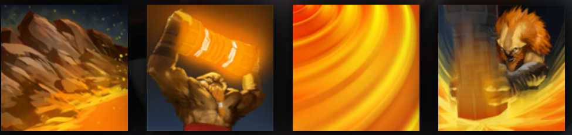

EARTHSHAKER
DISRUPTS ENEMY TEAM WITH HIS CHAIN STUNS
HISTORY
Like a golem or gargoyle, Earthshaker was one with the earth but now walks freely upon it. Unlike those other entities, he created himself through an act of will, and serves no other master. In restless slumbers, encased in a deep seam of stone, he became aware of the life drifting freely above him. He grew curious. During a season of tremors, the peaks of Nishai shook themselves loose of avalanches, shifting the course of rivers and turning shallow valleys into bottomless chasms. When the land finally ceased quaking, Earthshaker stepped from the settling dust, tossing aside massive boulders as if throwing off a light blanket. He had shaped himself in the image of a mortal beast, and named himself Raigor Stonehoof. He bleeds now, and breathes, and therefore he can die. But his spirit is still that of the earth; he carries its power in the magical totem that never leaves him. And on the day he returns to dust, the earth will greet him as a prodigal son.
ABILITIES
PAIRD WELL WITH
TINY
LICH
TUSK